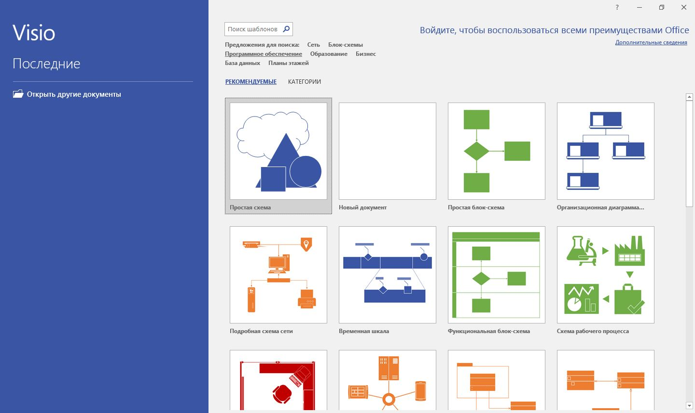
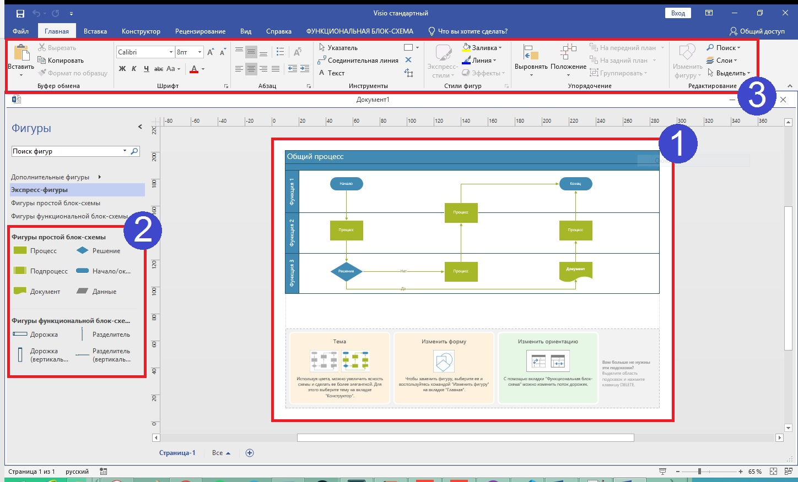
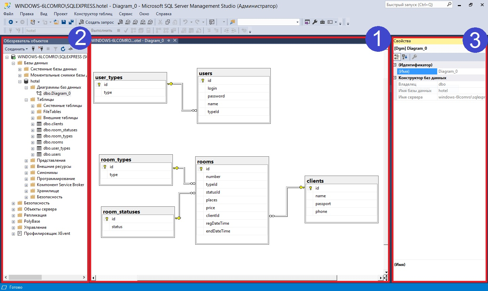
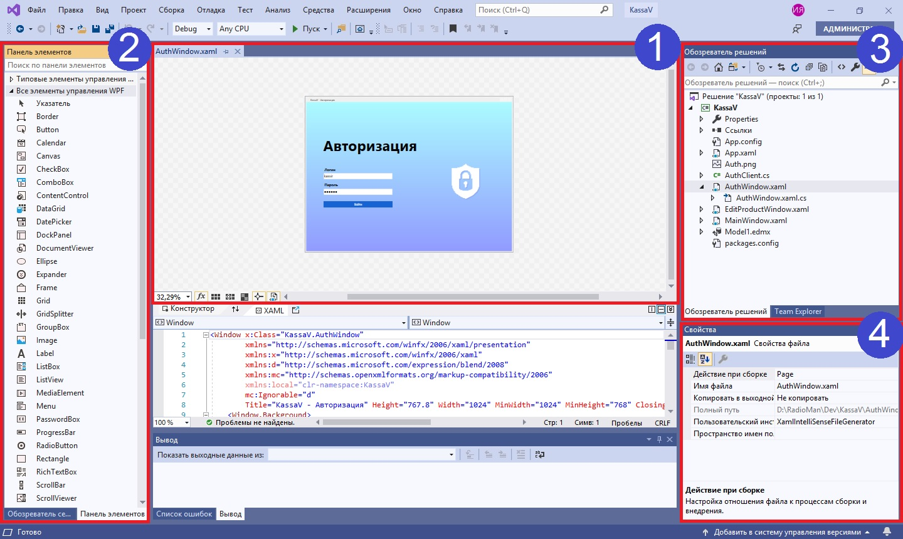
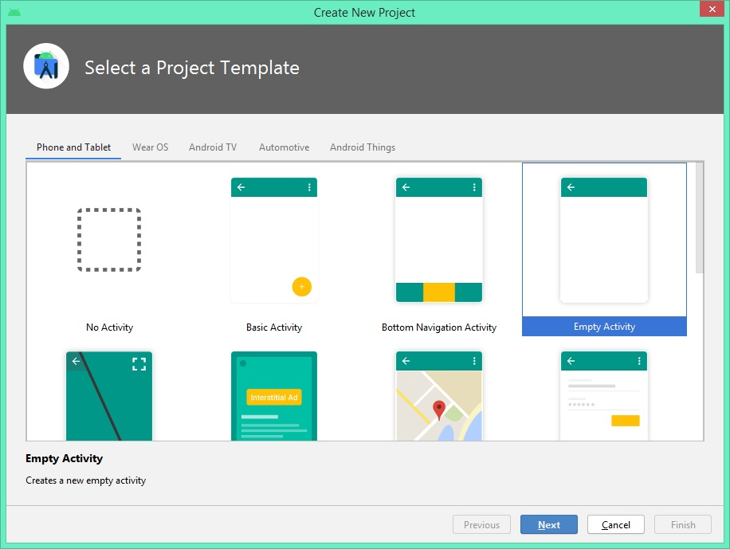
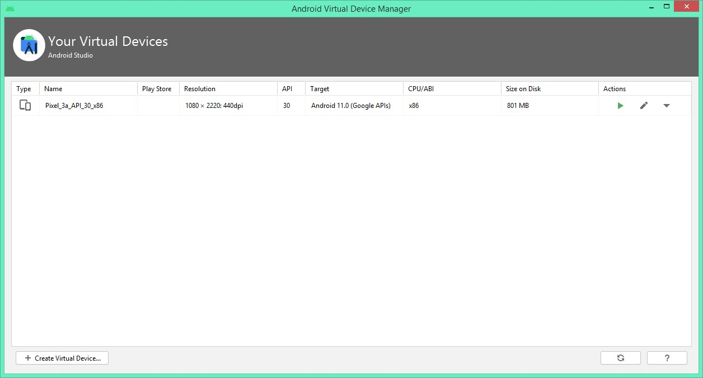
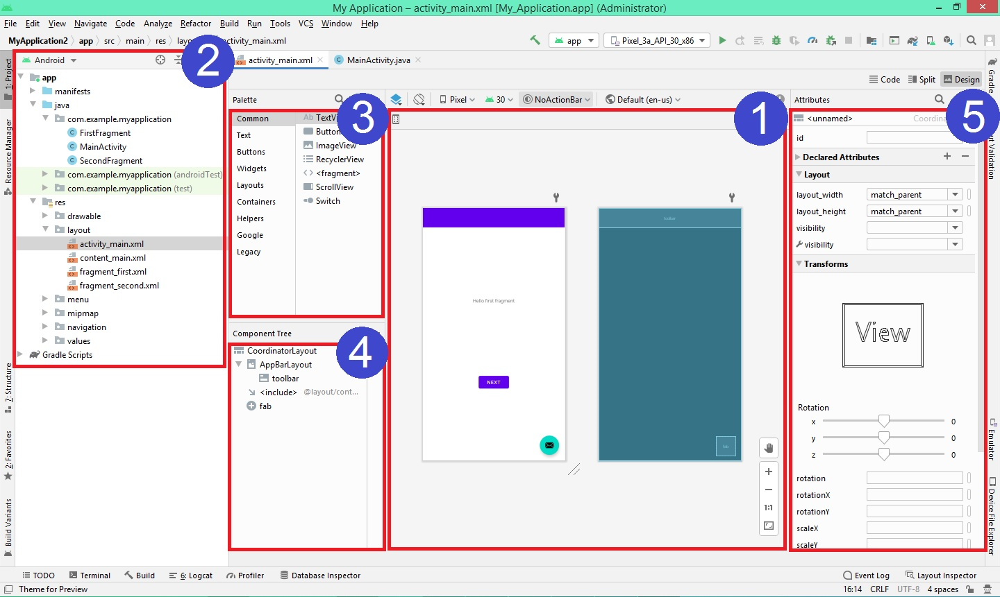

Основные темы цикла занятий
- Анализ и проектирование программных решений
- Создание базы данных и серверной части в виде Web API
- Разработка настольного и мобильного приложений
- Тестирование программных продуктов
- Контроль версий
- Работа в команде
Важно! Данный цикл занятий охватывает все основные этапы работы над созданием программных решений для бизнеса.
Основные разделы компетенции по WSSS
- Организация и управление работой
- Компетенции общения и межличностных отношений
- Решение проблем инноваций и креативность
- Анализ и проектирование программных решений
- Разработка программных решений для различных платформ
- Тестирование программных решений
Знакомство с используемыми в курсе программами
Microsoft Visio 2016 – Редактор для создания блок-схем и диаграмм любого уровня сложности. В курсе Visio будет использоваться для проектирования программных решений.
При запуске программы откроются доступные типы диаграмм, сгруппированные по категориям.

Элементы рабочего окна:
- Рабочая область
- Панель инструментов
- Лента настройки параметров

SQL Server Management Studio (SSMS) – Интегрированная среда, предоставляющая средства для настройки, наблюдения и администрирования экземпляров SQL server и баз данных. В курсе SSMS будет использоваться для работы с базами данных.
Элементы рабочего окна:
- Рабочая область
- Обозреватель объектов
- Настройка компонентов базы данных

Microsoft Visual Studio 2019 – IDE для создания, редактирования и отладки кода, а также публикации приложений. В курсе Visual Studio будет использоваться для разработки настольных программных решений.
Элементы рабочего окна:
- Окно редактора
- Панель инструментов
- Обозреватель решений
- Панель свойств

Android Studio – IDE для нативной разработки под Android платформу. В курсе Android Studio будет использоваться для разработки мобильных программных решений под различные устройства разных версий операционных систем.

AVD менеджер позволяет управлять списком эмуляторов, используемых для отладки работы приложения в различных условиях.

Элементы рабочего окна:
- Рабочая область
- Дерево проекта
- Палитра элементов
- Дерево компонентов
- Панель свойств
